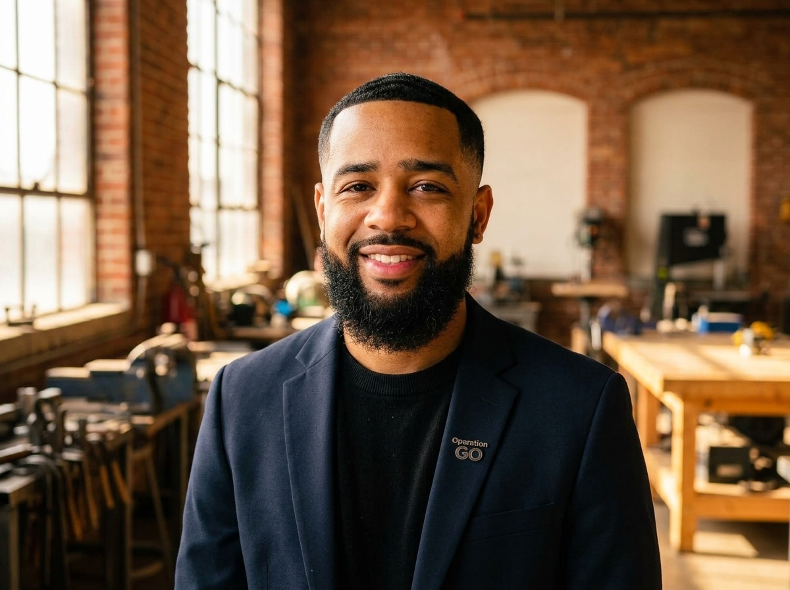

From a single afterschool workshop on Rochester's east side to a multi-track vocational powerhouse, our mission remains unchanged: real skills, real dignity, and real living-wage careers for youth.
To dismantle systemic barriers for Rochester youth ages 12–18 by providing hands-on vocational immersion in construction, manufacturing, digital media, and business—pairing students with master practitioners who impart trade craft, work ethic, and professional pride.
We envision a Rochester where every young person—regardless of socioeconomic background or juvenile justice interaction—has direct access to union apprenticeship pipelines, entrepreneurial sovereignty, and high-earning trades that sustain families for generations.
No theoretical toy kits. Students work with real lumber, power saws, multi-meters, and commercial cameras on tangible community build sites.
Every youth trainee is treated as an up-and-coming tradesperson. We invest in top safety gear, premium tools, and paid compensation.
We partner directly with secure youth facilities and diversion programs. Your past does not dictate the structures you can build tomorrow.
The pavilions, gazebos, and furniture built by our youth are installed in public Rochester parks, daycares, and community centers.

"I walked the exact hallways our students walk. I saw young men and women full of grit, spatial intelligence, and drive who simply lacked a pathway into the building trades."
Justin Ortiz graduated from the Rochester City School District with a drive to create systemic change. He honed his expertise directing premier youth trades and careers initiatives in Charlotte, North Carolina, observing how structured trade apprenticeships transformed at-risk youth into well-compensated, licensed professionals.
Taking those proven models back to Rochester, Ortiz founded Operation GO over 14 years ago. What began as a focused carpentry club has evolved into a recognized, multi-track training ecosystem endorsed by institutional funders like the ESL Federal Credit Union, Monroe County agencies, and regional contractors.
Justin Ortiz launches a pilot woodworking and hand-tool safety program with 12 Rochester students in a borrowed community center basement.
Operation GO establishes its dedicated vocational lab, integrating OSHA-10 safety certifications and partnering with local residential framing contractors.
Launches the paid Summer Youth Employment program. Students construct full-scale public gazebos and present their craftsmanship to Rochester city officials.
Operation GO is highlighted by ESL FCU as an exemplary workforce-preparation engine, expanding funding to include Real Estate & Financial Literacy tracks.
Expansion into footwear manufacturing, 4K digital cinema storytelling, and active dynamic hiring of master trade contractors across Greater Rochester.
Our team unites licensed master tradespeople, seasoned youth counselors, and community advocates dedicated to student growth.
RCSD Graduate. Over 14 years leading workforce development and youth trade programs in Rochester, NY and Charlotte, NC.
Master Carpenter & General Contractor with 22+ years on commercial build sites. Certified OSHA-500 Instructor.
Industrial designer and footwear artisan leading the Sneaker Reconstruction Lab and digital media apprenticeships.
Because Operation GO delivers workforce training both at our community hub and within juvenile justice and secure youth facilities, 100% of staff, instructors, and contractors undergo rigorous New York State background checks, fingerprinting, child safety certification, and facility security clearance.
Ensuring rigorous fiscal stewardship, community accountability, and strategic alignment with Rochester's economic future.
Partner, Rochester Legal Associates. Advocate for restorative justice & youth advocacy.
Former RCSD Vocational Education Administrator & Workforce Policy Specialist.
Senior Financial Officer with 20+ years managing non-profit endowment & grant compliance.
Director of Community Engagement, Greater Rochester Regional Chamber.
Share your skills in carpentry, electrical, video production, or apparel making. Competitive pay and flexible teaching schedules.
Browse Open Instructor Positions →